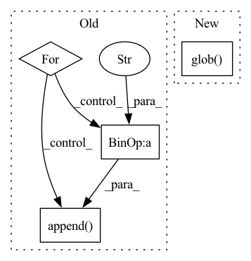

Pattern ID :41305

Before Change
self.img_paths = []
self.mask_paths = []
for img_path in data_dir.glob("images/*.png"):
mask_path = data_dir / f"masks/{img_path.stem}_mask.png"
self.img_paths.append(img_path)
self.mask_paths.append(mask_path)
self.augs = augs
After Change
class MVTecDataset(Dataset):
def __init__(self, base: Path, augs: albu.Compose) -> None:
self.img_paths = [str(p) for p in base.glob("images/*.png")]
self.augs = augs
def __getitem__(self, idx: int):
In pattern: SUPERPATTERN
Frequency: 3
Non-data size: 4
Instances
Fragment ID: 116372847
Project Name: taikiinoue/stad
Commit Name: 263b80dac382e9786dc7af6f29152ea79b2336cc
Time: 2020-08-01
Author: taikiinoue45@gmail.com
File Name: stad/datasets/mvtec.py
M Class Name: MVTecDataset
N Class Name: MVTecDataset
M Method Name: __init__(3)
N Method Name: __init__(3)
M Parent Class: Dataset
N Parent Class: Dataset
M File Name: stad/datasets/mvtec.py
N File Name: stad/datasets/mvtec.py
M Start Line: 16
M End Line: 24
N Start Line: 12
N End Line: 12
'>
Before Change
def make_datapath_list():
train_img_list = list()//画像ファイルパスのリストを作り、戻り値とする
for img_idx in range(0,103):
img_path = "./dataset/"+str(img_idx).zfill(3)+".jpg"
train_img_list.append(img_path)
return train_img_list
class ImageTransform():
//画像の前処理クラス
After Change
rootpath = "./dataset/"
target_path = osp.join(rootpath+phase+"*.jpg")//os.pathのjoin()ではパスの結合ができる
path_list = []//画像ファイルパスのリストを作り、戻り値とする
for path in glob.glob(target_path):
path_list.append(path)
print(path_list)
return path_list
'>
Fragment ID: 116372851
Project Name: zassou65535/image_generator
Commit Name: a0a7cb9f97bd4db2c5b0df878fe87fe40e5438e7
Time: 2020-02-06
Author: nakamura.k.bv@m.titech.ac.jp
File Name: module/dataloader.py
M Class Name: AnonimousClass
N Class Name: AnonimousClass
M Method Name: make_datapath_list(0)
N Method Name: make_datapath_list(0)
M Parent Class:
N Parent Class:
M File Name: module/dataloader.py
N File Name: module/dataloader.py
M Start Line: 6
M End Line: 10
N Start Line: 7
N End Line: 13
'>
Before Change
self.img_paths = []
self.mask_paths = []
for img_path in data_dir.glob("images/*.bmp"):
mask_path = data_dir / f"masks/{img_path.stem}.png"
self.img_paths.append(img_path)
self.mask_paths.append(mask_path)
self.augs = augs
After Change
class SomicDataset(Dataset):
def __init__(self, base: Path, augs: albu.Compose) -> None:
self.img_paths = [str(p) for p in base.glob("images/*.bmp")]
self.augs = augs
def __getitem__(self, idx: int):
'>
Fragment ID: 116372849
Project Name: taikiinoue/stad
Commit Name: 263b80dac382e9786dc7af6f29152ea79b2336cc
Time: 2020-08-01
Author: taikiinoue45@gmail.com
File Name: stad/datasets/somic.py
M Class Name: SomicDataset
N Class Name: SomicDataset
M Method Name: __init__(3)
N Method Name: __init__(3)
M Parent Class: Dataset
N Parent Class: Dataset
M File Name: stad/datasets/somic.py
N File Name: stad/datasets/somic.py
M Start Line: 15
M End Line: 23
N Start Line: 11
N End Line: 11